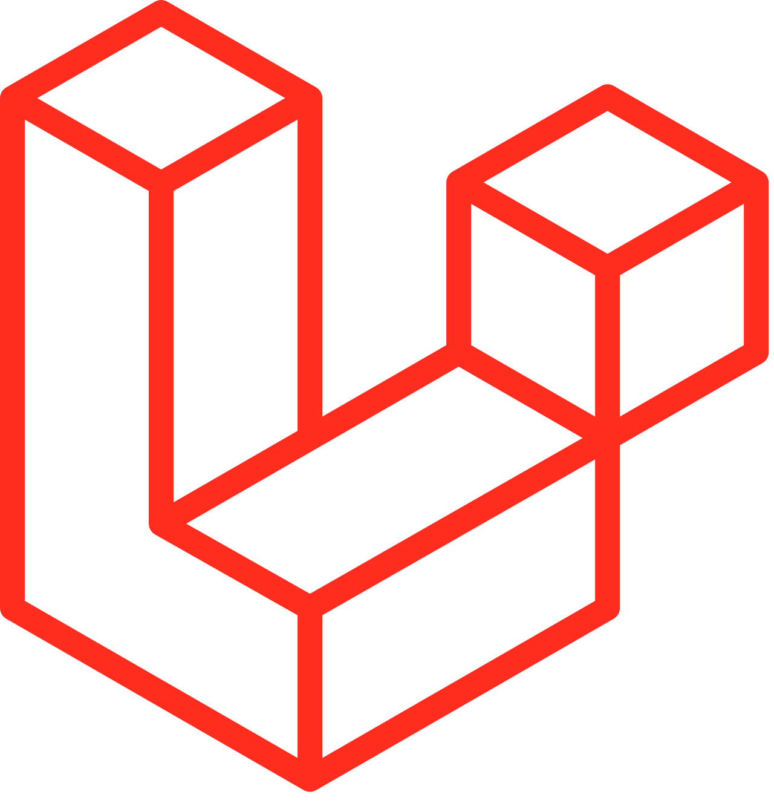
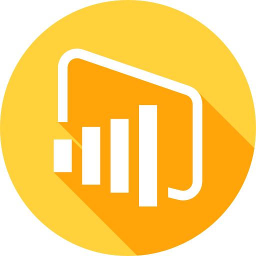
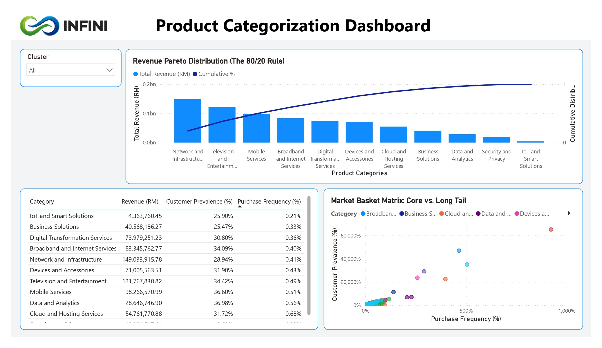
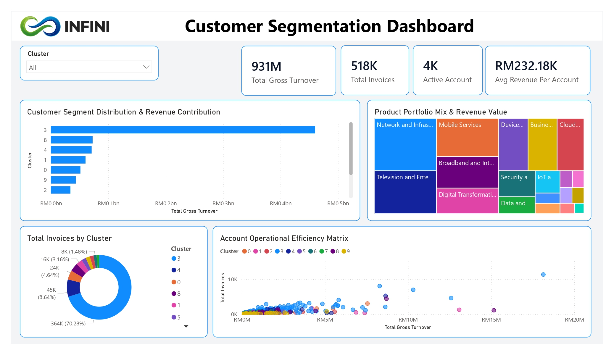
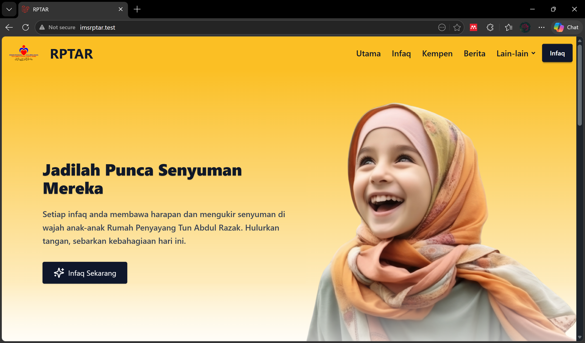
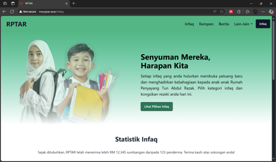

Nazrin Naim
Full-Stack Developer
Transforming manual workflows into functional, digitized web solutions using clean code and efficient database architecture.






Transforming manual workflows into functional, digitized web solutions using clean code and efficient database architecture.


Software Engineering graduate from Universiti Malaysia Pahang Al-Sultan Abdullah. Experienced in developing and maintaining dynamic web applications.
My technical portfolio encompasses corporate platforms, internal administrative tools, and comprehensive academic web projects designed to optimize data flow and human-computer interaction.
PHP, JavaScript, Python, Java, C, HTML/CSS
Laravel, Filament, Flutter, Tailwind, Bootstrap
MySQL, Firebase, RESTful API, JSON
Power BI, Excel, Git, GitHub, VS Code, CapCut (Multimedia)
Infini Telco faced high customer churn rates. The business needed to identify key patterns and pain points causing customer loss to improve retention strategies.
Customer subscription data, Power BI (Dashboarding), Excel (Diagnostic Charts), SQL.
Performed data cleaning and pipeline extraction, followed by developing interactive macro-driven reporting matrices to visualize churn patterns by age group.
Reduced customer churn risk profile through precise metric optimization and isolated high-value customer clusters for target acquisition campaigns[cite: 1].

[Dashboard Overview - Product Categorization]

[Dashboard Overview - Customer Segmentation]
The company relied heavily on manual paperwork for administrative tasks, resulting in severe bottlenecks for operational efficiency and data retrieval latency.
PHP, Laravel Framework, MySQL Database.
Engineered the backend structure to strictly digitize three key administrative workflows: quotation generation, invoice tracking, and purchase order processing.
Successfully executed the transition from manual paperwork to a centralized digital ecosystem, accelerating document retrieval and securing data integrity.
Rumah Penyayang Tun Abdul Razak required a secure, centralized digital terminal to manage incoming donations and provide a frictionless experience for donors.
Laravel, Filament Admin, Tailwind CSS, ToyyibPay Payment Gateway API.
Developed a responsive interface using Tailwind CSS and executed server-side integration with ToyyibPay to facilitate encrypted, real-time financial transactions.
Established a secure, automated transaction pipeline, fundamentally modernizing the organization's fundraising and financial tracking capabilities.

[Dashboard Overview]

[Dashboard Overview]
Starting June 2026
Feb 2026 - May 2026
Bachelor of Computer Science (Software Engineering) with Honours
Oct 2021 - Jan 2026 | CGPA: 3.58
Foundation in Engineering
CGPA: 3.56
Participant | GIFT 2026
Participant
Silver Award